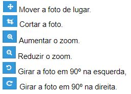

Perguntas Frequentes
Como Cadastrar Célula
1 - Clique no botão indicado pelas três barras laterais¹, Cadastro² e Minha Célula³
2 - Clique no botão Nova Célula¹.

3 - O processo de cadastro de células de multiplicação tem um período de tempo de 5 minutos para ser completado. Se o tempo expirar, o processo será cancelado e precisará ser refeito. Insira as informações: dia da semana¹, hora² e minuto³ e depoís clique no botão Continuar4. Caso queira retornar a tela anterior clique no botão Voltar5.
4 - Insira o CEP¹ e depois clique no botão Procurar².
5 - O CV usará o CEP para preencher as informações do endereço. Caso você queira, pode preencher o complemento¹. Para prosseguir para o próximo passo clique no botão Continuar² ou retorne a tela anterior clicando no botão Voltar³.
6 - Insira os dados do hospedeiro: nome¹, DDD², telefone³ e clique no botão Continuar4. Caso queira retornar a tela anterior, clique no botão Voltar5.
7 - Visualize as informações da nova célula para confirmar. Caso todos estejam corretos, insira sua senha¹ e clique em Continuar². Caso queira retornar a tela anterior, clique no botão Voltar³.
8 - O sistema cadastrará a célula.
Voltar Para Perguntas Frequentes
Como Cadastrar Time
1. Acesse o menu principal¹ clicando no botão ¹, item Cadastrar² e Time³.
2 - Você tem cinco minutos para completar o cadastro. Em caso de tempo expirar, o processo precisará ser refeito.Informe quem liderará: sozinho¹ ou com Com Cônjuge² e clique no botão Continuar³.
3 - Você deve inserir os dados do responsável clicando no botão Inserir¹ e informando data de nascimento² e CPF³. Após isso clique no botão Procurar4. Para retornar ao passo anterior, clique no botão Voltar5.
4. Informe a data de nascimento¹ (dia, mês, ano), CPF² e depois clique no botão Procurar³. Caso queira retornar a tela anterior, clique no botão Voltar4.
5. O sistema emitirá uma mensagem dizendo Dados liberados¹. Clique no botão Continuar². Caso queira retornar a tela anterior,clique no botão Voltar³
6. Insira o e-mail¹, confirme² e depois clique no botão Procurar³. Caso queira retornar a tela anterior, clique no botão Voltar4.
7. Para inserir os dados complementares, clique no botão Inserir¹.
8. Insira o nome da equipe¹ e depois clique no botão Inserir². Caso queira retornar a tela anterior, clique no botão Voltar³.
9. Clique no botão Finalizar¹.
10. O novo time será cadastrado.
Voltar Para Perguntas FrequentesComo Cadastrar Discipulado
1. Clique no botão ¹, Cadastro² e Discipulados³.
2 - Clique no botão Novo Discipulado¹.
3 - Insira as informações: dia da semana¹, hora², minutos³ e depois clique no botão Continuar4. Caso queira retornar a tela anterior, clique no botão Voltar5.
4 - Insira o nome¹ do discipulado e depois clique no botão Continuar². Caso queira retornar a tela anterior, clique nobotão Voltar³.
5 - Insira sua senha¹ e depois clique no botão Confirmar². Caso queira retornar a tela anterior, clique no botão Voltar³.
6 - O discipulado está cadastrado.
Voltar Para Perguntas FrequentesComo Cadastrar Revisionista
1. Para cadastrar a pessoa para ir para o Revisão de Vidas, ela deve estar iniciamente cadastrada como arregimentação. Em caso de dúvida consulte a seção Cadastrando pessoas na célula. Pra prosseguir com o cadastro, clique no Menu¹, Cadastro² e Revisionistas³.
2 - Note que o CV listará quando ocorrerá o próximo Revisão¹. Clique no botão Selecionar².
3 - Escolha a pessoa que deseja cadastrar clicando no botão Selecionar¹.
4 - Informe: primeiro nome¹, último nome², DDD³, telefone4, data de nascimento (dia4, mês5 e ano6), sexo7 e clique no botão Cadastrar9. Caso queira retornar a tela anterior, clique no botão Voltar8.
5 - O sistema emitirá a ficha do revisionista.Caso queira imprimir a ficha, clique no botão Imprimir¹. O revisionistaestá cadastrado.
Voltar Para Perguntas FrequentesComo Trabalhar no Revisão de Vidas
1. Clique no Menu¹, Cadastro² e Trabalhar no Revisão de Vidas³.
2. Note que o CV listará quando ocorrerá o próximo Revisão¹. Clique no botão Selecionar².

3. Confirme sua participação clicando no botão Ativar¹. Caso queira retornar a tela anterior, clique no botão Voltar².
4. O sistema emitirá uma mensagem dizendo que o cadastro foi efetivado. Caso queira retornar a tela anterior, clique no botão Voltar¹.
Voltar Para Perguntas FrequentesComo Lançar Arregimentação
Essa seção contém tutoriais de como lançar arregimentação seja no cultos ou células.
Passo a passo:
1 - Clique no Menu¹, botão Lançar² e Arregimentação³.

2 - Selecione o periodo semanal¹ que deseja lançar. O CV listará todos os seus discípulos para a arregimentação de um por um. Selecione o discípulo4 que deseja lançar e clique no botão8 de acordo com o evento que ele tenha participado (culto, célula). Note que após esse clique, o ícone5
será exibido. O CV mostra a quantidade de participantes para cada evento³. Após lançar a arregimentação clique em Enviar Relatório6. Você pode enviar mandar mensagens WhatsUp para seus discípulos clicando no botão 7. Você pode definir os resultados da busca usando filtros². Voltar Para Perguntas FrequentesComo Lançar Atendimento
Essa seção contém tutoriais para lançar atendimentos num determinado período.
Passo a passo:
1 - Clique no Menu¹, Lançar² e Atendimento³.
2 - O CV listará todos os seus discípulos. Para lançar atendimento basta clicar no botão¹. Para remover o atendimento, clique no botão².
3 - Note que a medida que você lança os atendimentos, o CV mostra a quantidade numa barra horizontal¹.
4 - Você pode enviar comentários específicos para um determinado atendimento clicando no botão³. Informe o comentário¹ e clique no botão Cadastrar². Caso queira retornar a tela anterior, clique no botão Voltar³.
5 - Após inserir o comentário, ele poderá ser visualizado na tela de Atendimento clicando no botão ¹. Caso deseje excluiro comentário, clique no botão².
Voltar Para Perguntas FrequentesComo Lançar Parceiro De Deus
Aqui contém tutoriais de como lançar parceiro de Deus. Siga os passos:
1. Acesse o Menu Principal¹ clicando no botão¹, item Lançar² e Parceiro de Deus³.
2. Clique no botão Lançar¹.
3. Selecione o tipo de parceiro¹ de Deus: individual ou de célula e clique no botão Selecionar².
4. Insira as informações do parceiro de Deus: time¹, líder², valor individual³,dia4,mês5,ano6 e clique no botão Lançar 8. Caso queira retornar a tela inicial, clique no botão Voltar7
5. O Parceiro de Deus será agendado podendo ser confirmado ou não.
Voltar Para Perguntas FrequentesComo Gerar uma Reposição
1. Acesse a página clicando no botão¹, Cursos² e depois Gerar Reposições³.
2. Selecione a turma¹, equipe², subequipe³, somente última aula4 e depois clique no botão Filtrar5.
3. Os alunos serão listados por módulo. Selecione a aula¹ que deseja gerar a reposição e depois clique no botão Gerar Reposição².
4.O sistema gerará a reposição da aula.
Voltar Para Perguntas FrequentesComo Alterar Perfil
1. Para acessar o perfil clique na barra superior, clique no botão¹ e no item Perfil².
2. Escolha um dos itens que deseja alterar: foto de perfil¹, DDD², telefone4, sexo³, email5, senha6. Caso deseje alterar a foto clique no botão Subir Foto7e avance para o passo 2. Caso deseje alterar DDD, telefone ou sexo pule para o passo 3. Caso deseje alterar email, siga para o passo 4, senha passo 6.
3. Após escolher a nova foto, o CV abrirá opções de edição abaixo:
Edite a foto conforme desejar e depois clique no botão Salvar foto¹. O CV emitirá uma mensagem dizendo "Foto Salva".
4. Edite DDD¹, telefone² ou sexo³ e clique no botão Salvar Dados4. Os dados serão alterados.
5. Para alterar o e-mail clique no botão Alterar¹.
6. O CV abrirá uma nova tela em que você deve informar seu novo email¹, repetí-lo² e por fim confirmar clicar no botão Alterar³.O email será alterado.
7. Para alterar a senha clique no botão Alterar Senha¹.
8. Insira sua nova senha¹, repita² e depois clique no botão Alterar³. A senha será alterada.
Voltar Para Perguntas Frequentes